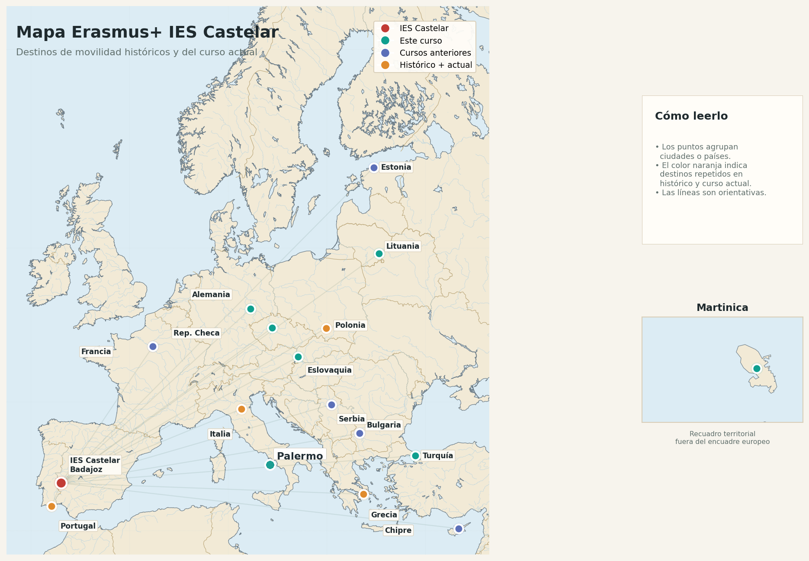

Educación Escolar
Movilidades vinculadas a ESO y Bachillerato: grupos de alumnado, observación docente, cursos de formación y cooperación con centros europeos.
Un espacio para centralizar la información sobre movilidades Erasmus+, convocatorias, documentos de solicitud y actividades de internacionalización del centro.
Esta página está pensada como punto de entrada desde la web del IES Castelar. Los apartados pueden ampliarse según las convocatorias vigentes y las acreditaciones/proyectos activos de cada curso.
Movilidades vinculadas a ESO y Bachillerato: grupos de alumnado, observación docente, cursos de formación y cooperación con centros europeos.
Espacio preparado para publicar información de movilidades relacionadas con ciclos de Sanidad e Informática, según la convocatoria y el proyecto correspondiente.
Información para personal docente y no docente: job shadowing, cursos, documentación, compromisos de difusión y justificación de la movilidad.
Mapa visual de los destinos vinculados a proyectos y movilidades del centro, combinando las referencias históricas publicadas en la web del IES Castelar con las movilidades realizadas durante el curso 2025/2026.

El mapa utiliza una base geográfica reconocible, con costas, países y fronteras, y una paleta propia del IES Castelar. Las ubicaciones son aproximadas y pueden agrupar varias ciudades o proyectos de un mismo país.
Este apartado resume de forma visual las movilidades realizadas durante el curso 2025/2026 y recogidas en la presentación de proyectos Erasmus+ del IES Castelar. Puede actualizarse cada curso con nuevas imágenes, noticias o enlaces a publicaciones del centro.
Proyecto centrado en inteligencia artificial y aprendizaje medioambiental, coordinado por Francisco Pajuelo Holguera.
Fin de proyecto previsto en diciembre.
Movilidad en grupo con 11 alumnos/as en Wieliczka, Polonia, acompañados por 3 docentes.
Job shadowing de 2 profesoras en Martinica y de 2 profesores en Eslovaquia.
CFGM de Cuidados Auxiliares de Enfermería: prácticas en un centro sociosanitario en Bolonia, con acompañamiento docente a la ida y a la vuelta.
Job shadowing en Berlín sobre Formación Profesional, con participación de 4 profesores/as de TCAE. Además, dentro del proyecto KA121-VET se ha realizado un curso de profesorado en Palermo (Italia).
Un alumno de 2º CFGS LCB realiza FEOE en Gdansk, Polonia, y una alumna de 2º CFGS APC realiza FEOE en Praga, República Checa.
Docentes de Sanidad visitan al alumno en Gdansk; profesorado de Informática realiza job shadowing en Vitalis, Schkeuditz, y en Faro.
KA220 · AI4GREENED: Educación Escolar. Coordinación: Francisco Pajuelo Holguera.
KA121-SCH: Movilidades de alumnos y profesores. Coordinación: Diana Sosa Baltasar.
KA121-VET: Formación Profesional de Grado Medio. Incluye prácticas en Bolonia, job shadowing en Berlín y curso en Palermo (Italia). Coordinación: Jesús Ferrera Picado.
KA131-HED: Formación Profesional de Grado Superior. Coordinación Informática: Francisco Pajuelo Holguera. Coordinación Sanidad: Jesualdo Carcelén Rodríguez y Marta Díaz Miguel.
Propuesta de proceso para explicar de forma clara al profesorado y al personal del centro qué pasos debe seguir.
Estas condiciones se incorporan a la convocatoria y al baremo para organizar las movilidades sin perjudicar el funcionamiento ordinario del centro.
Máximo de movilidades en período lectivo: un docente podrá realizar, como máximo, dos movilidades durante el período lectivo de un curso escolar.
Cursos de formación: los cursos se realizarán únicamente durante períodos no lectivos.
Revisar destinatarios, modalidades, fechas, destinos posibles, criterios de selección y obligaciones.
Completar el modelo de Jobshadowing/Curso, justificando objetivos, actividades, resultados e impacto esperado.
Adjuntar la acreditación de contacto o carta de acogida de la entidad receptora, si procede.
Enviar la solicitud por el formulario o procedimiento que establezca el centro en cada convocatoria.
La comisión publica listado provisional, abre plazo de alegaciones y resuelve el listado definitivo.
Tras la concesión, se gestiona la documentación, seguros, convenio, programa formativo y justificación final.
Documentos adaptados al IES Castelar. Los campos marcados o pendientes deben completarse antes de su publicación oficial.
En esta sección se recogen los anexos asociados a la convocatoria Erasmus+ de movilidad de personal del IES Castelar.
Anexo 1: Objetivos de movilidad.
Anexo 2: Modelo de proyecto de Jobshadowing/Curso.
Anexo 3: Rúbrica de corrección.
Anexo 4: Carta de acogida o acreditación de contacto.
Datos generales del centro y campos que conviene completar antes de publicar el espacio Erasmus+.
Avda. Ramón y Cajal, nº 2 · 06001 Badajoz
Teléfonos: 924 013496 / 924 013497
Correo del centro: ies.castelar@edu.juntaex.es
[Completar] Nombre de la persona coordinadora
[Completar] Correo Erasmus del centro
[Completar] Formulario de solicitud / enlace a Rayuela / procedimiento interno